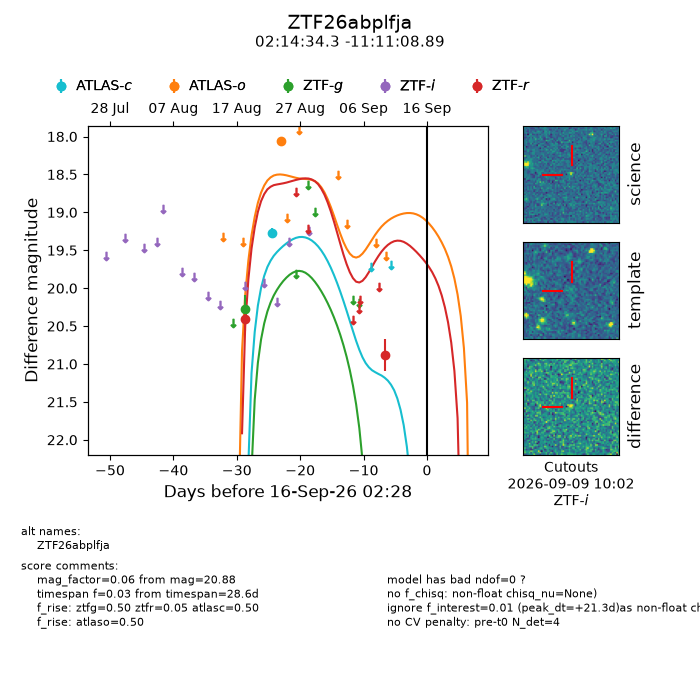
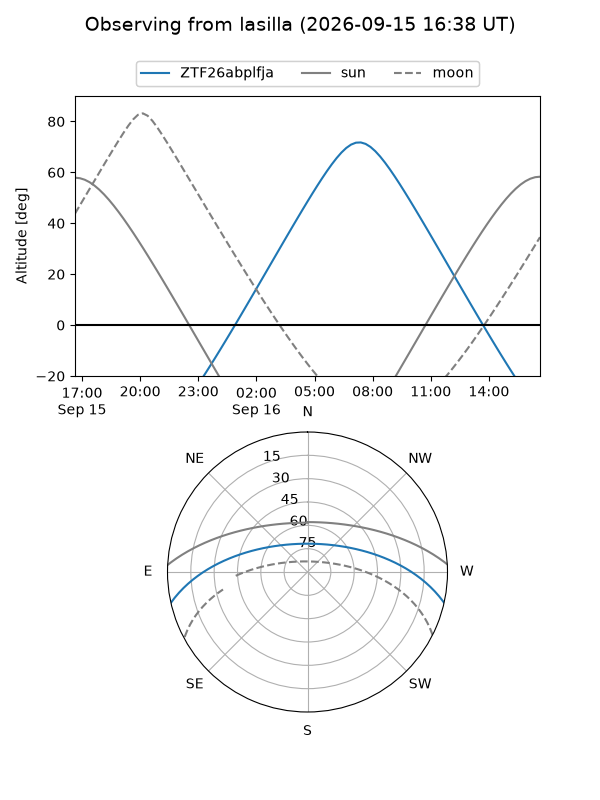
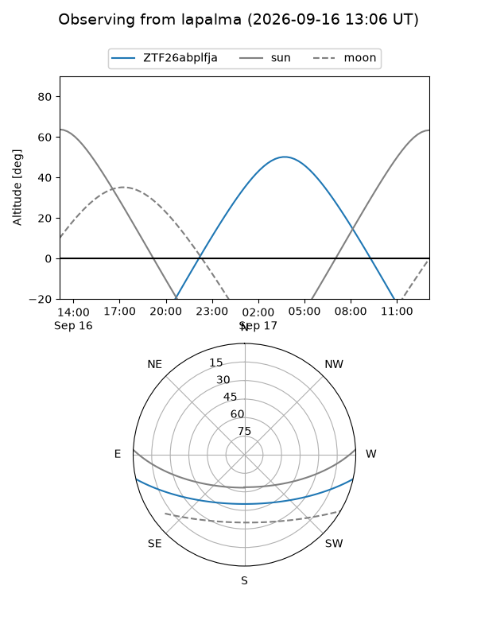
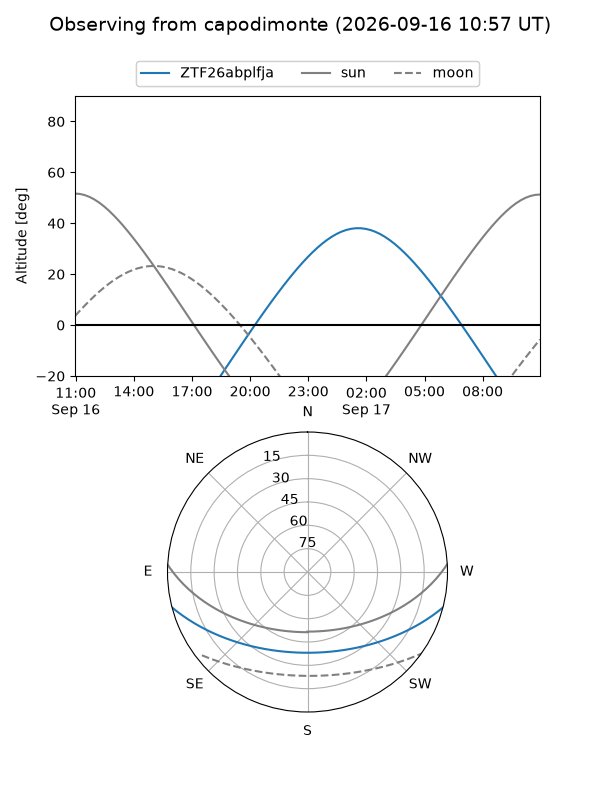
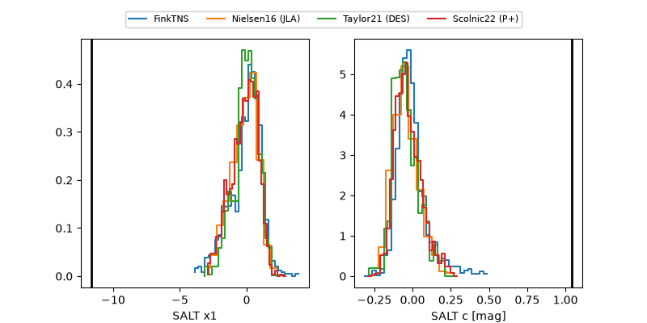

ZTF26abplfja
Target ZTF26abplfja at 2026-09-16 14:05
Aliases and brokers:
FINK-ZTF: ztf.fink-portal.org/ZTF26abplfja
Lasair-ZTF: lasair-ztf.lsst.ac.uk/objects/ZTF26abplfja
ALeRCE-ZTF: alerce.online/object/ZTF26abplfja
Direct TNS query: direct search
alt names
ZTF26abplfja (ztf,fink_ztf)
Coordinates:
equatorial (ra, dec) = 33.6428,-11.18580
equatorial (HMS+DMS) = 02:14:34.27,-11:11:08.89
galactic (l, b) = (177.7307,-64.78639)
Flags:
peak dt: +21.8
Photometry:
last atlasc=19.27, atlaso=18.06, ztfg=20.28, ztfr=20.88
1 atlasc, 1 atlaso, 1 ztfg, 2 ztfr detections
Lightcurve

Visibility



Additional plots
